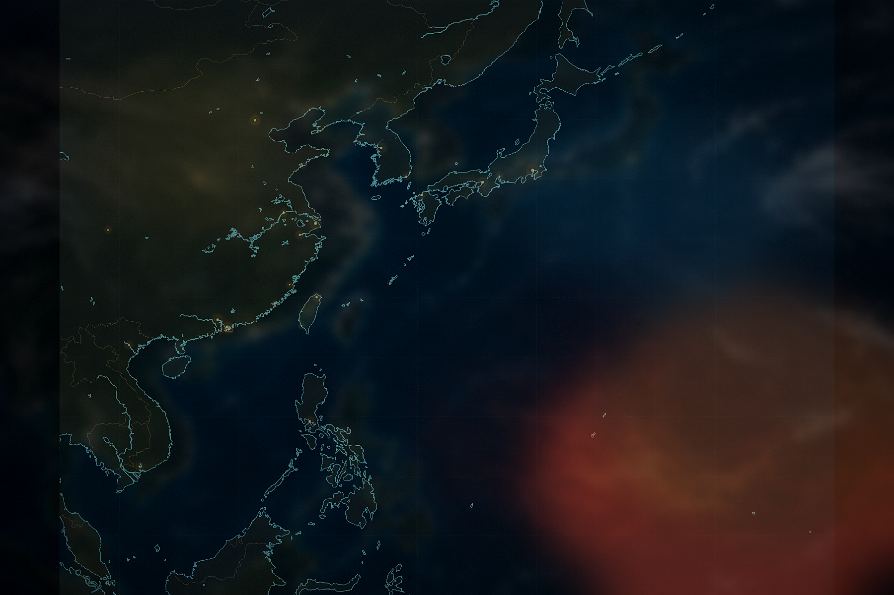

GLOBAL CLIMATE COMMAND · 2087
超級颱風危機
極端氣候時代的生存戰略遊戲
颱風會自主選擇路線並因海溫而增強。你只有有限情報與有限時間，必須在登陸前完成撤離、防衛與氣象干預。
超級颱風危機
極端氣候時代的生存戰略遊戲
2087 / 7 / 1403:00回合 1/16

100°E115°E130°E145°E160°E
海溫（°C）2426283032+
實測路徑預測中心線70% 機率圈
台風強度熱帶低氣壓熱帶風暴強烈熱帶風暴颱風強颱風超強颱風
全球氣候危機指揮中心 · 行動報告
A